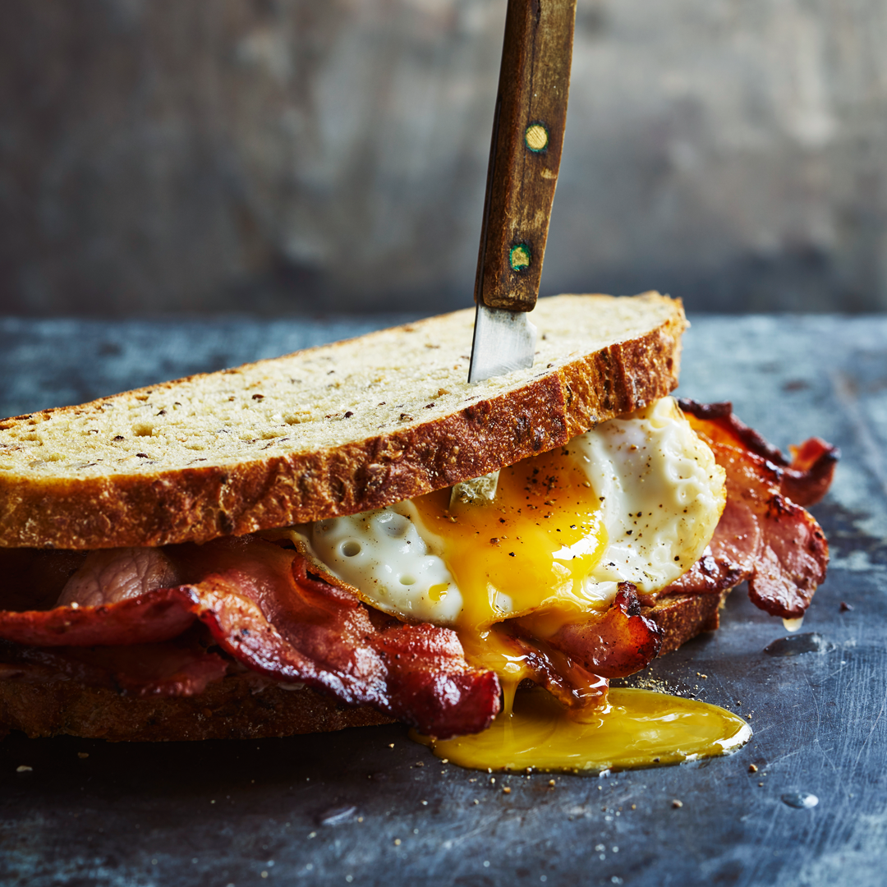

This American sandwich belongs to the group of breakfast sandwiches and consists of bread that is often toasted or buttered, crispy bacon, fried or scrambled eggs, and cheese. It is often served with a cup of coffee on the side. The most common options regarding the choice of cheese include cheddar, Swiss cheese, or American cheese, while bacon may be replaced with ham, back bacon, or sausages.
Meal prep time : 20 minutes
Servings : 2